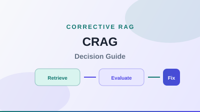
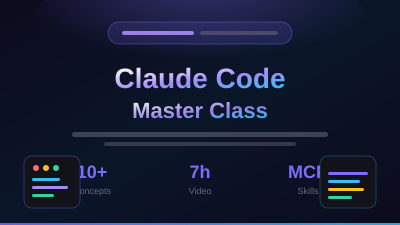
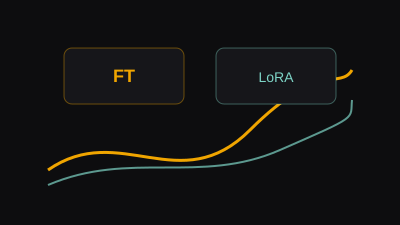
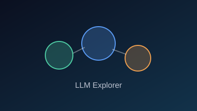
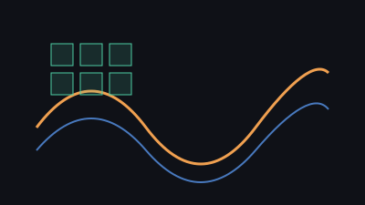
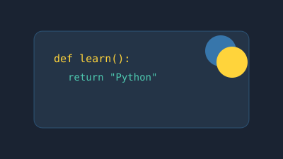
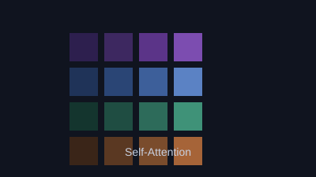

Architecture
Architecture Pattern Guides
Hub for animated ByteByteGo-style guides — AI agents, failure modes, events, async APIs, containers, and CRAG.
Browse all guides →Interactive explainers and practical guides covering LLM foundations, fine-tuning, AI engineering workflows, architecture pattern simulations, and enterprise platform migration — from D365 and SSAS → Fabric modernisation to Cathay Cargo Terminal cloud migration.
Hub for animated ByteByteGo-style guides — AI agents, failure modes, events, async APIs, containers, and CRAG.
Browse all guides →17 agent workflow patterns — ReAct, reflection, multi-agent, blackboard, and more with search and live flow demos.
Open page →Partitions, split-brain, partial failures, gray failures, amplification, and cascade demos for resilient system design.
Open page →Competing consumers, projections, event sourcing, outbox, and saga orchestration with animated message flows.
Open page →Short/long polling, SSE, webhooks, WebSockets, and async job APIs with step-by-step sequence playback.
Open page →Sidecar, adapter, ambassador, leader election, work queue, and scatter/gather with interactive pod diagrams.
Open page →
Grade retrieval quality, correct weak context, and decide when a correction loop is worth the cost — with a decision simulator.
Open page →Practitioner-led 8-week programme: Python, prompt engineering, LangChain, RAG pipelines, agents, and a deployed capstone app.
View programme →Interactive explainer for Corrective RAG: when to add a retrieval quality gate, architecture flow, use cases, and scenario practice.
Open page →Interactive guide to offline indexing and online query pipelines — loaders, chunking, embedding, retrieval, and generation with a step-by-step walkthrough.
Open page →Interactive guide comparing FAISS-style stores with production vector databases — scale, cost, filtering, and a decision checklist with search simulator.
Open page →Interactive explainer for Document, page_content, metadata, loaders, splitters, and transformers across the RAG ingestion pipeline.
Open page →WebLogic 12.x → JBoss EAP 8, Oracle → Aurora PostgreSQL, on-prem → AWS — cargo terminal apps, SITA/ACCS integrations, and Entra ID SSO.
Open page →Expanded programme reference — CI/CD, observability, RACI, security, EKS, and detailed cutover runbooks for the Cathay Cargo Terminal AWS modernisation.
Open page →From legacy SSIS/SSAS/SSRS to Azure — ADF, Fabric, Qlik CDC, Dataverse, and enterprise BI notes for HK & India deployments.
Open page →Two-phase path from SQL Server 2016 SSAS Multidimensional (MDX) to Microsoft Fabric Semantic Models — phased delivery, MDX→DAX translation, and zero-disruption cutover.
Open page →Interactive cost model with rate card, labour breakdown, AI leverage calculator, three budget scenarios, Gantt schedule, and resourcing notes for a 9-month programme.
Open page →Curated AI and ML hiring portals with practical focus for active job search.
Open page →
Beginner-friendly walkthrough for using Claude Code effectively in real projects.
Open page →
15-module path from Claude fundamentals to agentic workflows, MCP, skills, hooks, and capstone project.
Open course →
Practical notes and examples for adapting base models to specific tasks.
Open page →End-to-end Hugging Face + TRL guide through non-instruction tuning, SFT, and DPO with LoRA adapters.
Open page →
Standalone page to explore LLM concepts and behavior in an approachable format.
Open page →
Visual, standalone explainer for how positional information is added in transformers.
Open page →Detailed intuition and deeper explanation of positional encoding mechanisms.
Open page →
Fast refresher on core Python fundamentals for AI and automation workflows.
Open page →
Simple offline explainer of self-attention concepts with practical intuition.
Open page →